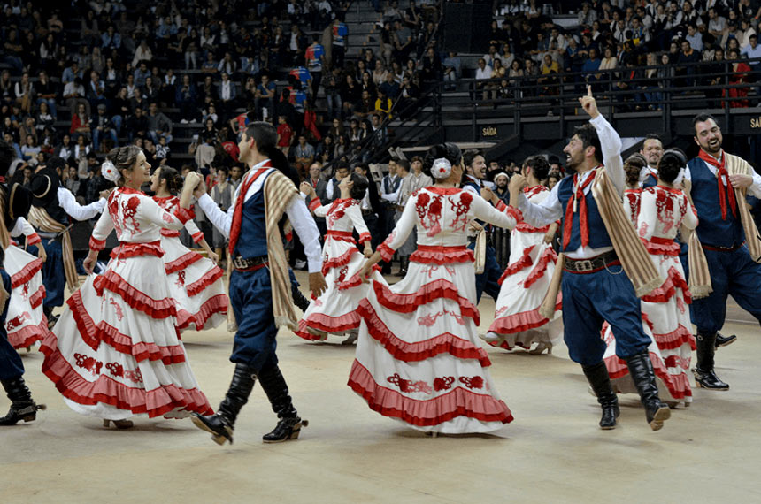
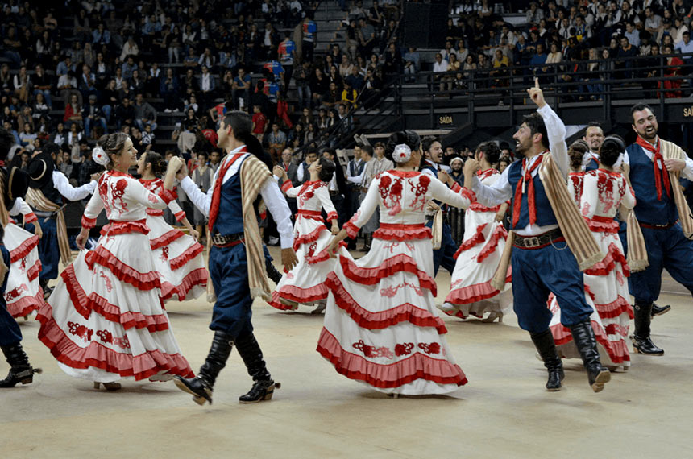

o ctg é uma sociedade sem fim lucrativos que buscam divulgar as tradiçoes e o folclore da cultura gaucha tal como foi codificada e registrada por folvloristas reconhecidos pelo movimento
para voce trabalhar com essa cultura gaucha voce precisa em muitos casos passar por uma especie de vestibular da tradição os concurços de prendas seja do ctg da regiao tradicionalista ou do estado, envolvem prova escrita com quertoes sobre historia e geografia do rio grande do sul,tradição,folclore e uma redação
o ctg em si é um lugar onde sao cultivadas todas as expreções do tradicionalismo como dança,se declama,se trova,se laça,se joga bocha e truco ou apenas se integra uma roda de mate